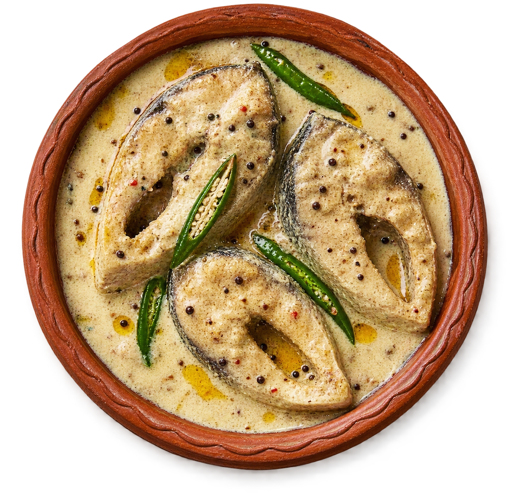
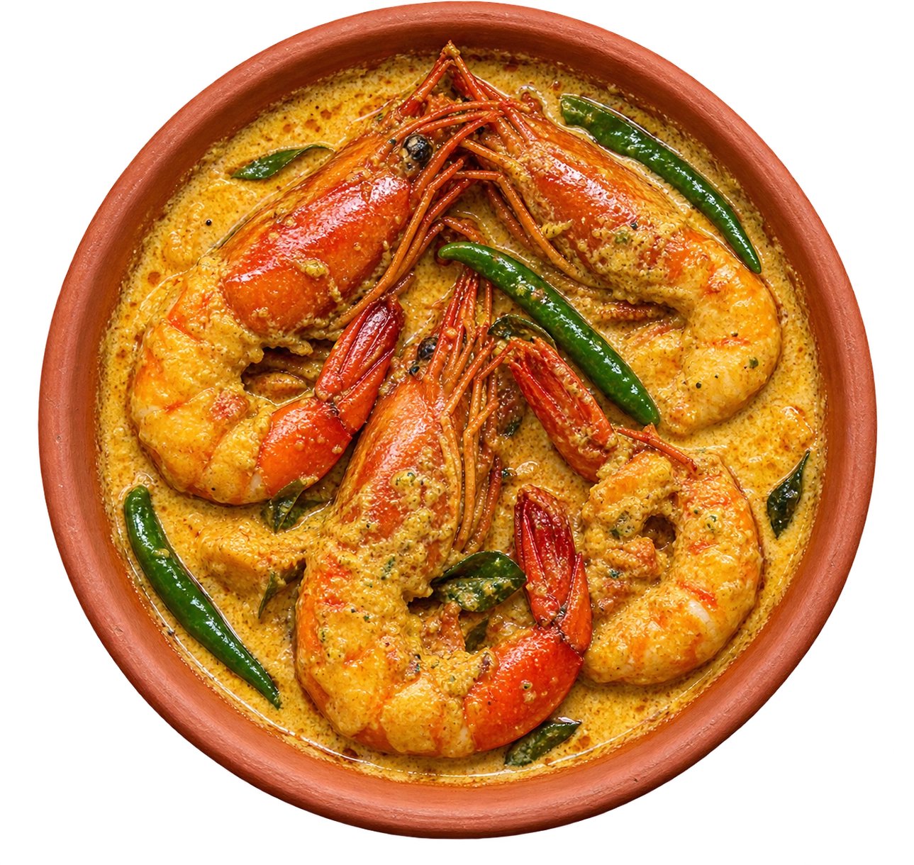
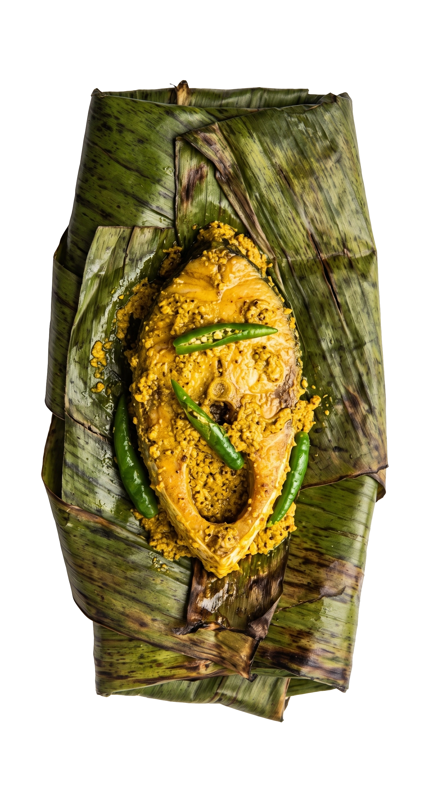
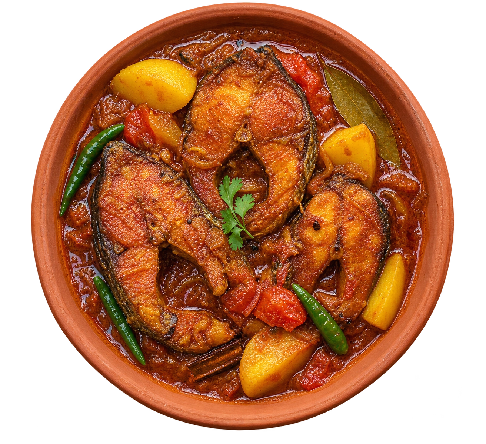
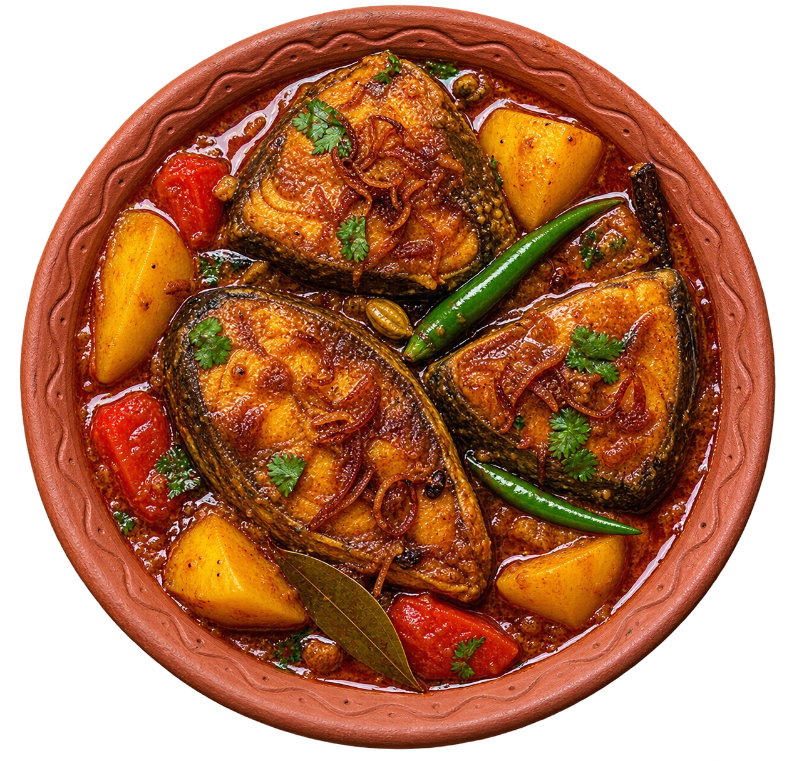
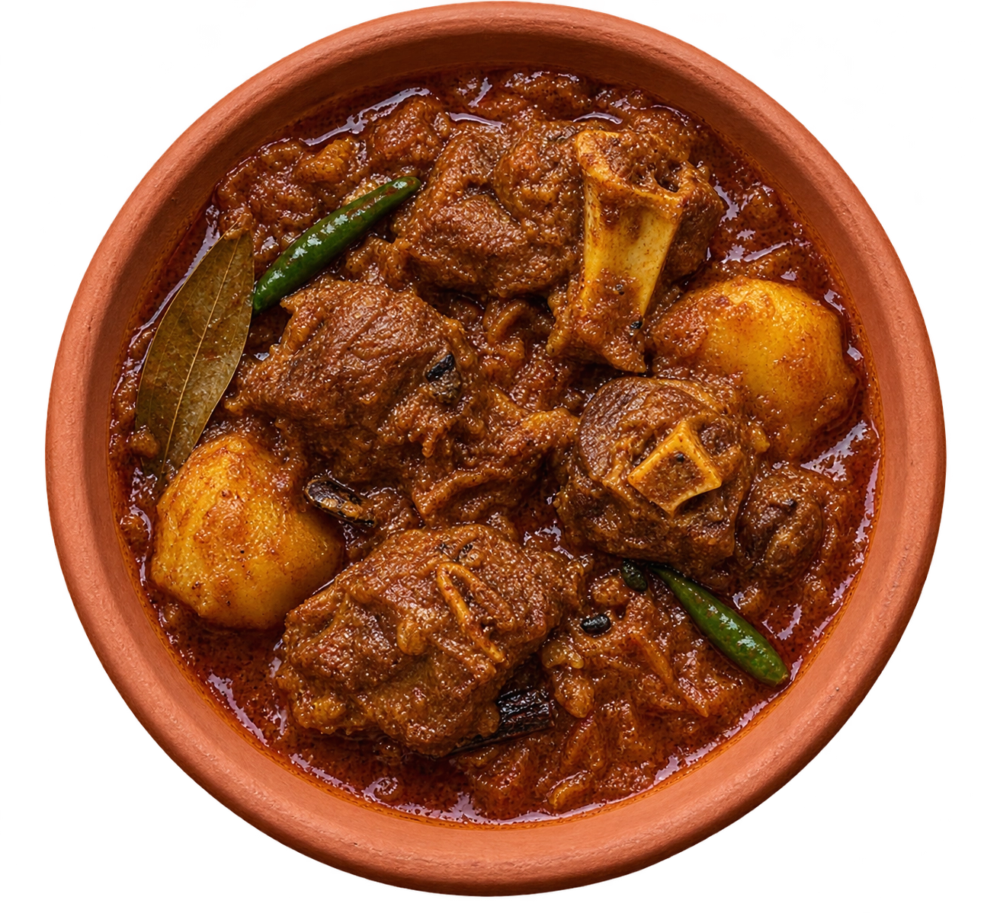
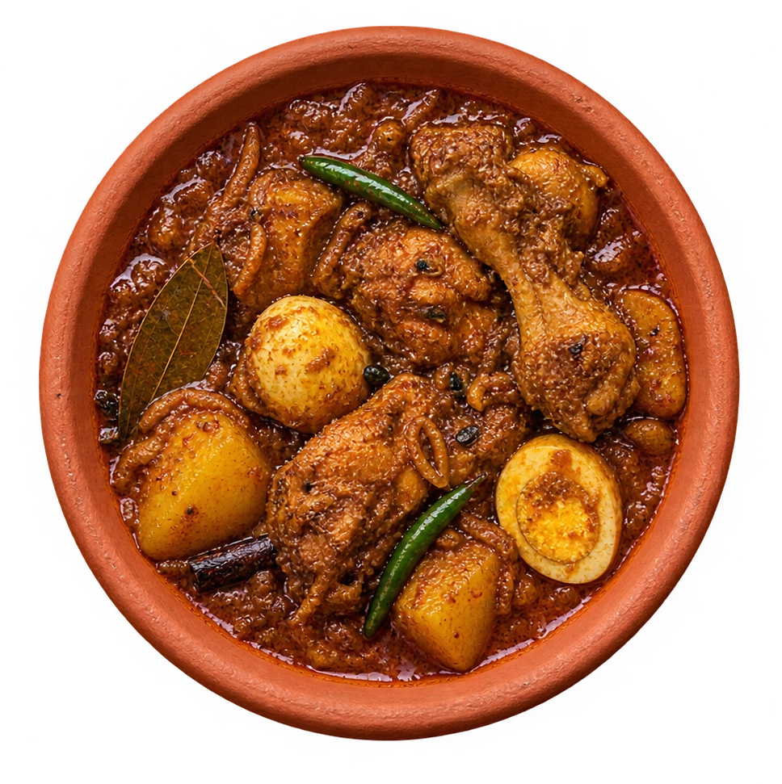
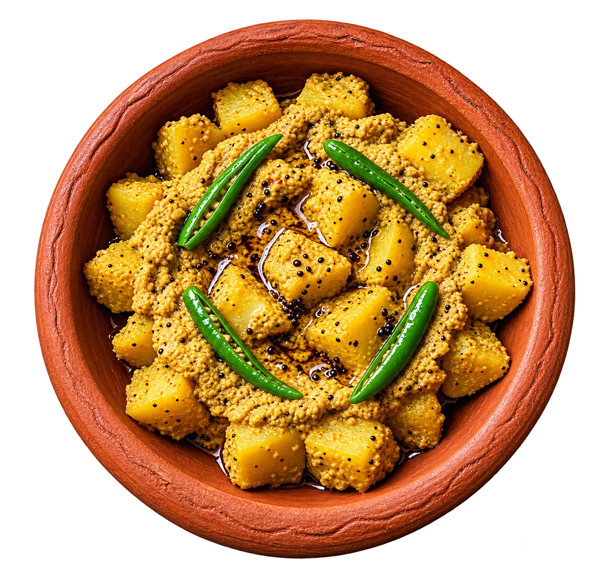
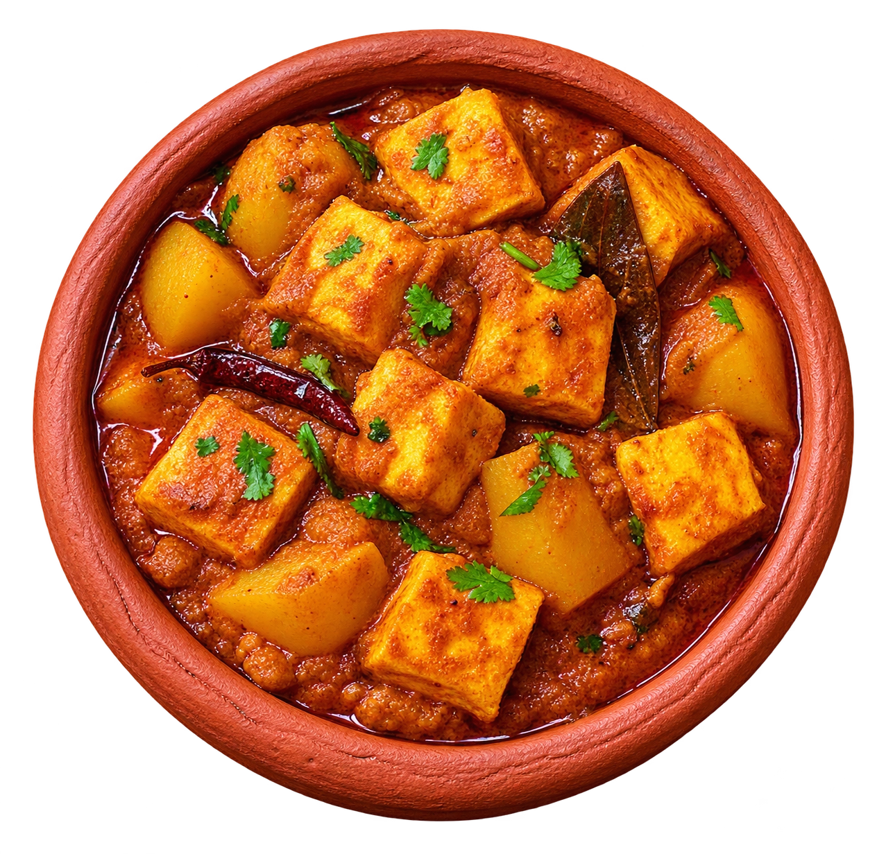
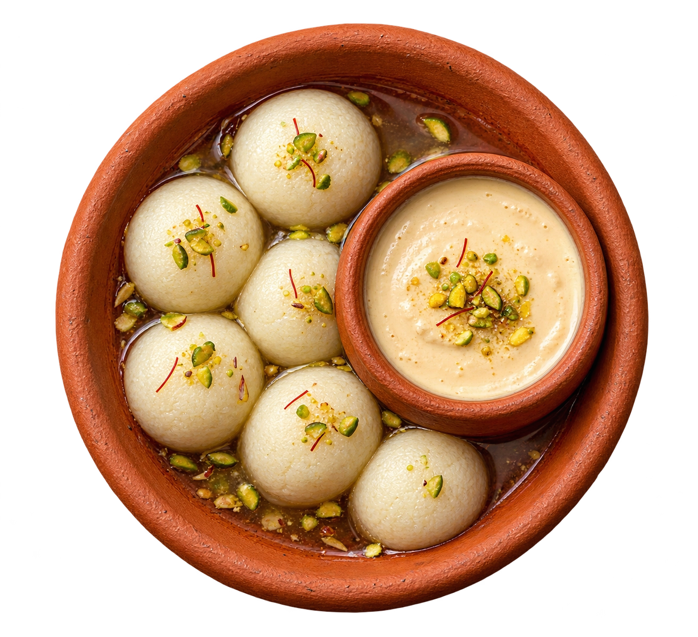

Non-vegDoi Ilish
₹1,450Fresh Hilsa steak simmered in mustard seeds and creamy yoghurt gravy with green chillies.
Heritage Bengali Cuisine
Slow-cooked Hilsa, fragrant mustard curries and artisanal sweets, prepared the traditional way.
Hilsa is a seasonal catch — availability may vary.

Non-vegFresh Hilsa steak simmered in mustard seeds and creamy yoghurt gravy with green chillies.

Non-vegJumbo prawns in a silky coconut milk curry with whole aromatic spices and ghee.

Non-vegBhetki fillet in pungent mustard paste and green chillies, wrapped in banana leaf and steamed.

Non-vegLight Hilsa broth tempered with nigella seeds, tender potatoes and fresh green chillies.

Non-vegSlow-cooked Hilsa curry with caramelized onions, whole spices and fragrant mustard oil.

Non-vegSlow-roasted tender mutton in a dark, spicy onion-garlic gravy with golden fried potatoes.

Non-vegCountry chicken curry with hard-boiled eggs and roasted spices, inspired by British-era rest houses.

VegetarianPotato cubes cooked in smooth, fragrant poppy seed paste with green chillies.

VegetarianHand-kneaded chenna koftas simmered in an aromatic cumin-ginger jus without onion or garlic.

VegetarianCaramelized sweet yoghurt set in earthen pots, with soft Roshogolla in cardamom syrup.
Please tell your server about any allergies before ordering.